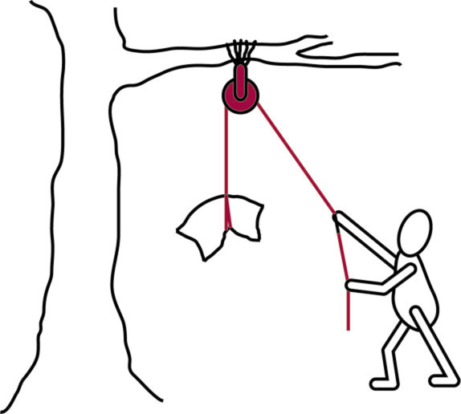

Eenvoudige gekombineerde meganismes
In hierdie hoofstuk gaan jy leer hoe eenvoudige meganismes gekombineer kan word om komplekse, nuttige masjinerie te maak. Jy gaan leer van ’n meganisme wat ’n katrol genoem word, wat gewoonlik deel is van ’n hyskraan. Daarna gaan jy leer hoe ’n katrol en ’n krukarm gekombineer kan word om ’n tou of kabel mee op te wen.

Figuur 1: Hyskrane gebruik katrolle en hefbome.
Figuur 2
Masjiene kombineer eenvoudige meganismes
Kan jy nog onthou wat ’n meganisme is? Meganismes is die dele waaruit masjiene saamgestel word. Masjiene word gewoonlik saamgestel deur eenvoudige meganismes wat aan mekaar verbind is.
Hoekom is masjiene nuttig? Hulle help ons om dinge verder, vinniger en makliker te beweeg. Ons kan eenvoudige meganismes aanmekaar sit om ’n masjien te ontwerp wat aan ons ’n meganiese voordeel gaan gee.
Onthou:
- Meganiese voordeel verminder die insetkrag sodat die las makliker beweeg kan word.
- Klas 1-hefbome se steunpunt is tussen die insetkrag en die uitsetkrag.
- Klas 2-hefbome se steunpunt is aan die een kant van die hefboom geposisioneer en die uitsetkrag aan die ander punt. Die las is altyd tussen die insetkrag en die steunpunt.
- Klas 3-hefbome se steunpunt en las is aan die teenoorgestelde punte van die hefboom geposisioneer. Die insetkrag is in die middel.
Figuur 3 op die oorkantste bladsy wys ’n “toringhyskraan”. Hierdie hyskrane word gebruik om ons te help om hoë geboue te bou.
Toringhyskrane is lang, regop hyskrane wat toue, katrolle en wenasse gebruik om werkers te help om swaar goed soos bakstene en sement te lig. Hulle word gemaak van eenvoudige meganismes wat saamwerk.
Gebruik die prent van die toringhyskraan op die teenoorgestelde bladsy en beantwoord die vrae.
1. Wat dink jy is die hoofdoel van die hyskraan?
2. Wat doen die katrolle?

Figuur 3: ’n Toringhyskraan gebruik baie verskillende meganismes.
3. Die hyskraan moet swaar voorwerpe van verskeie plekke op die grond oplig. Hoe help die trollie om voorwerpe van verskillende plekke op die grond op te lig?
4. Hoekom het die hyskraan nodig om te roteer?
Roteer beteken om rondom die as of die middelpunt te draai.
5. Die hyskraanbalk het ’n steunpunt bo-op die vertikale kolom, ’n insetkrag van die skuins kabels heel bo-op die hyskraan wat die hyskraanbalk op trek, en ’n las wat die hyskraanbalk aftrek. Hoe weet jy dat die hyskraanbalk eintlik ’n hefboom is?
6. Is die hyskraanbalk ’n “klas 1-hefboom”, “klas 2-hefboom”, of ’n “klas 3-hefboom”? En gee dit ’n meganiese voordeel? Hoe weet jy dit?
7. Wat verhoed dat die hyskraan sal omval wanneer dit iets oplig?
8. Maak ’n lys van al die meganismes op hierdie hyskraan wat help om laste te lig.
9. Maak nou ’n lys van al die dele wat die hyskraan regop hou terwyl dit swaar voorwerpe oplig.
Katrolle – meganiese voordeel met behulp van toue en kabels
Kyk na figuur 4. ’n Man lig ’n swaar sak op. Hy gebruik ’n tou wat om ’n katrol gebind is om die sak opwaarts te trek deur self afwaarts te trek aan die tou. Die katrol maak dit moontlik om die rigting waarin die tou getrek word, te verander. Wanneer die man die tou afwaarts trek, kan hy met sy gewig op die tou leun om die swaar sak makliker op te lig. Maar daar is geen meganiese voordeel in hierdie situasie nie.

Figuur 4: ’n Man gebruik ’n tou en ’n katrolwiel om die swaar sak op te lig.
Kyk na figuur 5. ’n Persoon gebruik twee katrolle om ’n gewig te lig. Een katrol is aan die dak vasgemaak. Die tweede katrol hang aan ’n lus van die tou. Die twee katrolle, en die manier waarop die tou om beide van hulle gebind is, word ’n katrolstelsel genoem. Die katrolstelsel maak dit makliker om ’n las te lig. Die stappe hieronder verduidelik hoe dit werk:
- Aan die een kant trek jy aan een stuk van die tou. Dit is die insetkrag.
- Twee stukke tou lig die las.
- Twee katrolle wat aan een enkele stuk tou verbind is, soos in figuur 5, gee ’n meganiese voordeel.

Figuur 5: Indien jy twee katrolle aan ’n stuk tou verbind, soos op die manier wat hierbo aangetoon word hier, kry jy ’n meganiese voordeel.
Maak jou eie katrolstelsel
Jy het die volgende nodig vir hierdie aktiwiteit:
- twee plastiek gordynringetjies om as katrolle te dien,
- 500 mm tou of garing,
- paar gewigte, soos staal moere of wassers,
- ’n plat stuk geriffelde karton, omtrent A4 grootte,
- skuifspelde, en
- drie spelde.
Figuur 6: Jy kan ’n katrolstelsel uit gordynringetjies maak.
Bestudeer die prent in figuur 6 om jou te help om jou eie katrolstelsel te maak. Die instruksies is hieronder.
Maak jou eie katrolstelsel
- Gebruik ’n speld om een gordynringetjie omtrent 30 cm van die boonste deel van die geriffelde karton aan te heg. Dit sal die vaste katrol wees.
- Maak ’n haak van die derde skuifspeld en haak dit deur die gat van die ander gordynringetjie. Dit sal die bewegende katrol wees.
- Gebruik ’n speld om die een end van die garing of tou aan die karton vas te maak, iewers naby aan die vaste katrol.
- Ryg die garing of tou om die bewegende katrol, en dan weer op en bo-oor die vaste katrol.
- Maak die las aan die haak onder vas.
- Hang of leun die kartonbord teen ’n muur.
1. Trek die tou afwaarts. Wat gebeur met die las?
2. Hoeveel dele van die tou trek die las op aan die uitsetkant van die stelsel?
3. Hoeveel dele van die tou word afgetrek aan die insetkant van die stelsel?
4. Trek die punt van die tou by die insetkant 100 mm af. Meet dan hoe ver die las opgelig word. Skryf jou antwoord neer.
5. Probeer nou die las lig sonder die katrolstelsel. Hoe vergelyk dit met wanneer jy die las met die katrolstelsel lig? Maak die katrolstelsel dit makliker?
’n nóg makliker katrolstelsel
Doen hierdie aktiwiteit as huiswerk sodat jy kan seker maak dat jy katrolstelsels volledig verstaan. Voeg nog twee gordynringetjies by jou katrolstelsel. Kyk na die prent hieronder om jou te help. Toets die stelsel deur dieselfde las as voorheen te lig.
Figuur 7: Jy sal die meganiese voordeel vermeerder as jy meer katrolle gebruik. Daar sal meer tou lengtes wees om die las mee te lig.
1. Met watter afstand word die las gelig wanneer jy die tou met 100 cm af trek?
2. Beskryf wat ’n katrolstelsel doen.
3. Waarvoor dink jy word katrolstelsels meestal gebruik?
4. Ware katrolstelsels gebruik wiele in plaas van gordynringetjies. Hoekom dink jy is dit so? Wenk: Dink hoe jy dit makliker kan maak om ’n voorwerp oor ’n growwe oppervlak te trek.
Kombineer meganismes
Maak ’n hys-stelsel
In hierdie aktiwiteit gaan jy meganismes kombineer om ’n masjien te maak wat dinge kan oplig. Onthou dat masjiene dit makliker vir ons maak om voorwerpe te beweeg, te lig, te stoot of te trek.
Kyk na die model van die hys-stelsel in figuur 8. Jy gaan in die aktiwiteite wat volg kans kry om hierdie hys-stelsel te maak. Beantwoord eers die vrae hieronder.
Figuur 8: ’n Hys-stelsel wat jy kan maak make
1. Hoe help die katrolstelsel om voorwerpe te lig?
2. Wat doen die hefboom op hierdie stelsel?
3. Verduidelik hoe jy die stelsel kan gebruik om ’n las te lig?
Maak ’n a-raam vir ’n steunpunt
Trek die vorms in figuur 9 na. Sny hulle dan uit en plak hulle op ’n stuk geriffelde karton. Sny die karton vorms uit.

Figuur 9: Gebruik hierdie vier vorms om ’n A-raam te maak.
- Gebruik die vorms om twee A-rame te maak.
- Gom twee vorms aan die bokant vas.
- Voeg kleefband aan die onderkant om die A-raam te maak.
Kyk na figuur 10 om te sien hoe om dit te doen.
Figuur 10: Hoe om ’n A-raam te maak.
Maak ’n handgedrewe wenas
’n Wenas bestaan uit ’n kombinasie van:
- ’n wenas-drom wat ’n silinder is waarom tou of kabel opgerol is,
- ’n as wat toelaat dat die drom kan roteer, en
- ’n krukarm wat ’n hefboom is om die drom mee te draai.
Jy benodig die volgende vir hierdie aktiwiteit:
- twee melkbottelproppies,
- kleefband,
- ’n lang spyker,
- stewige karton, 15 mm wyd en 40 mm lank, en
- ’n klein spyker.

Figuur 11: Jy kan ’n handgedrewe wenas maak deur twee melkbottelproppies saam te bind of te gom.
- Plak die melkbottelproppies teen mekaar.
- Maak twee klein gaatjies in die middel van elke proppie. Jou wenas se as gaan deur hierdie gate gaan.
- Sny ’n stuk stewige karton vir jou krukarm. Dit moet omtrent 15 mm wyd en 40 mm lank wees.
- Druk die lang spyker deur die een kant van die krukarm. Druk dan die spyker deur die middel van die drom, en uit deur die anderkant van die drom.
Neem kennis: Die krukarm en die drom moet styf op die spyker pas. Wanneer die krukarm draai, moet die drom ook draai.
- Maak ’n handvatsel vir die krukarm deur ’n klein spyker deur die ander kant van die krukarm te druk.
Heg die wenas aan die A-raam
- Maak ’n gat in elke A-raam op dieselfde plek, in die een “been” van die A-raam, omtrent 45 mm van die grond af.

Figuur 12: Plaas jou handgedrewe wenas op jou A-raam.
- Haal die wenas versigtig uitmekaar en sit die drom eenkant. Druk dan die as met die krukarm daaraan vas deur die voorste gat van die A-raam.
- Plaas die drom tussen die voorste en agterste A-rame en druk die as dan weer deur die drom.
- Hou aan om die steunpunt deur te druk totdat dit deur die gat in die agterste A-raam gaan.
1. Wat doen die handgedrewe wenas?
Maak ’n hyshefboom
Trek die vorms af en gebruik dit om ’n geriffelde karton hyshefboom te maak, presies dieselfde grootte as die een hieronder in figuur 13.

Figuur 13: Jy kan hierdie vorm gebruik om ’n hyshefboom te maak.
Volg die volgende stappe:
- Maak ’n gat in beide A-rame omtrent 10 mm van bo af.
- Maak ’n gat in die hyshefboom, 10 mm van die onderkant van die V-vorm.
- Gebruik ’n spyker as die steunpunt en verbind die hyshefboom aan die twee A-rame om ’n klas 2-hefboom te maak.
- Druk nog ’n spyker deur die regterkantse bene van die A-rame om die hefboom op te hou. Kyk na figuur 14 om jou te help.
Figuur 14: Hoe om jou hyshefboom aan jou A-rame te verbind
Voeg ’n katrolstelsel by
Volg hierdie metode:
- Heg twee gordynringetjies aan jou hyshefboom, een aan die regterkant en een aan die linkerkant. Hierdie ringetjies gaan die tou wat laste gaan ophys, lei.
- Heg ’n speld aan of maak ’n gat aan die regterkant van die hyshefboom. Knoop ’n stuk garing of dun tou aan die speld vas, of maak ’n knoop deur die gat.
- Maak ’n haak van ’n skuifspeld en haak dit dan aan ’n ander gordynringetjie.
- Ryg die garing om die katrol met die haak aan, oor die regterkantse katrol op die hyshefboom, en dan oor die linkerkantse katrol op die hyshefboom.
- Trek die los ent van die garing af na die wenas en draai dit ’n paar maal om die drom. Plak dit dan aan die drom vas.
- Draai die krukarm totdat die hak in die lug hang.
Kyk na figuur 15 om jou te help om die volgende vrae te beantwoord.
Figuur 15: Voeg ’n katrolstelsel by jou hyshefboom.
Vrae
1. Hoe gebruik jy die stelsel om voorwerpe op te lig?
2. Watter vorm dink jy maak die A-raam op hierdie stelsel sterk?
3. Soos dit op die oomblik is, beweeg die hyshefboom van jou model-hyskraan nie. Kan jy iets verander of bysit sodat jy die hyshefboom op en af kan laat beweeg? Verduidelik hoe jy dit sou doen. Wenk: Jy kan twee wenasse op ’n hyskraan hê.
4. Noem die meganismes wat gekombineer is om hierdie stelsel te maak.
5. Gee die wenas meganisme jou ’n meganiese voordeel? Verduidelik jou antwoord.
Onthou: ’n Meganiese voordeel maak die uitsetkrag (op die las) groter as die insetkrag.
’n Afstandvoordeel laat die las verder beweeg as wat die insetkrag beweeg.
6. Gee die katrolstelsel aan jou ’n afstandvoordeel? Verduidelik jou antwoord.
Wat het jy geleer?
1. Watter meganismes kan jy kombineer om ’n hyskraan te maak? Verduidelik jou antwoord.
2. Gee ’n voorbeeld van ’n masjien wat ’n krukarm gebruik.
3. Gee ’n voorbeeld van ’n masjien wat katrolle gebruik.
4. Hoe gee ’n katrolstelsel ’n meganiese voordeel?
Volgende week
Jy gaan volgende week met jou mini-PAT vir kwartaal 3 begin. Jy gaan ’n masjien ontwerp en maak om ’n skrootwerfhandelaar te help om magnetiese van nie- magnetiese metale te sorteer.